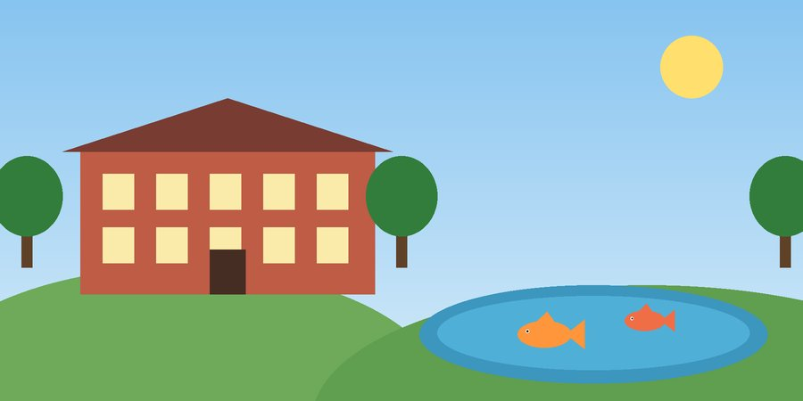

Education
- BSc. Fisheries and Aquaculture, Jomo Kenyatta University of Agriculture and Technology (JKUAT), 2025 to present
- Units this year include Applied Computing (ICS 2216), where I built this portfolio
Skills and Competencies
- Microsoft Word (advanced formatting)
- Network simulation (Packet Tracer)
- HTML and CSS
- Basic data analysis in Excel
- Teamwork and clear communication
Research Interests
I'm curious about water quality and fish growth, especially how simple pond measurements such as temperature, oxygen and pH affect how fast tilapia grow. I'm also interested in wetland conservation and in how small farmers can use cheap technology to monitor their ponds.
Academic Projects and Certifications
| Project or Certificate | Year | What I learned |
|---|---|---|
| Professional CV in Word (Lab 1) | 2026 | Structuring a CV and using advanced Word formatting |
| Network simulation in Packet Tracer | 2026 | How devices connect and share data on a network |
| "All About Me" portfolio website (Lab 2) | 2026 | HTML, CSS, responsive design, hosting and a relational database |